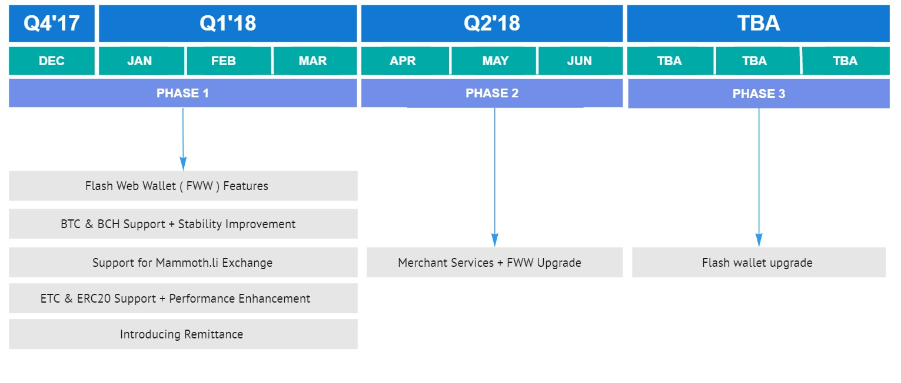

FLASH is designed for small payments, due to its low transaction fees, high speed, and throughput, all while retaining its BTC/LTC heritage and functionality. This makes FLASH ideal for loyalty, registration and messaging applications, and is perfect for customers and businesses using small payments. We know efficiency is essential for most transactions, so we benchmarked FLASH up to 25,000 txn/sec on a $700 i7 computer consuming less than 80 watts of power. Because of this, FLASH is eco-friendly and easy on your pocketbook.
The number of coins is fixed and completely issued.
There is zero inflation.
Processing is optimized and tested for efficiency and high volume.
There is no developer “slush fund”.
Projects can be developed by anyone and donations for the developers solicited from the community.
Wallets
FLASH supports a number of online wallets including Coinomi, Coin Payments, QT (Window, Mac, Linux) and an easy to use online wallet designed for the mass consumer market. If you can make online payments, you already know how to use FLASH.


Web Wallets
With the web wallet, you can use an email address or your public address for sending and receiving coins.
The web wallet supports most browsers and mobile devices. There's nothing to download or install for maximum convenience.

EXCHANGES

-

FLASH is a high performance blockchain secured with delegated Electoral Consensus designed for use for private sectors in accounting, loyalty, and many other applications. Legally compliant.
-

Transact with low fees and confirms in seconds.
-

We welcome developers to try out our system via our web API's to build powerful robust apps today.
Road Map
FLASH is being optimized to support applications in the $1T remittance market. We have exchanges in UAE, India, Mexico and Liechtenstein that have agreed to participate.
The features are broken into several categories:
- FLASH web wallet( FWW ), which will have support for IN WALLET exchange for BTC, BCH and local currency, plus credit card purchase. Many additional local languages will be added.
- Blockchain upgrades to make FLASH more stable
- Remittance applications, including Human ATM and automatic conversion to local fiat.
- FLASH Merchant services, including consumer payment via FLASH with cash back feature.

| Feature | Release date |
|---|---|
| Flash Web Wallet ( FWW ) features: Add 2FA for Txn confirmation, Add QR code scanner, Txn email notifications, Browser notifications, Transact in Flash using cell phone as the identifier | Q4, 2017 |
| BTC & BCH Support + Stability Improvement: Testnet launch for DPOW & Governance Node, Addition of BTC & BCH to FWW, Add Exchange between FLASH/BTC and FLASH/BCH to FWW, Multiple address support for Flash, BTC, BCH in FWW | Q1, 2018 |
| Support for Mammoth.li Exchange | Q1, 2018 |
| ETH & ERC20 Support + Performance Enhancement: ETH and ERC20 tokens support in FWW, Export of private keys for Flash & others from FWW, Add 2FA for key export confirmation | Q1, 2018 |
| Introducing Remittance: Implementation of remittance application to FWW, Import of private keys for Flash & others FWW | Q1, 2018 |
| Merchant services + FWW Upgrade: Mainnet launch for DPOW and Governance nodes, Credit card purchase of FLASH/BTC/BCH in FWW, Cold storage of private keys as a service, Add Roving ATM application to FWW, Add Merchant tools to FWW, Inclusion of more cryptocurrencies to FWW | Q2, 2018 |
| Flash wallet upgrade: Integrate FWW with regional Exchanges and allow FIAT deposits and withdrawals, Hardware wallet integration to FWW, Integration of Flash proprietary USB container as cold storage to FWW | TBA |